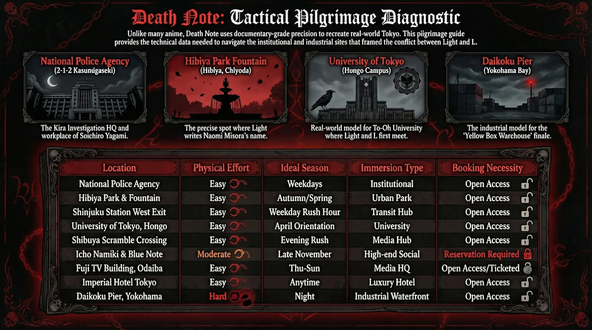
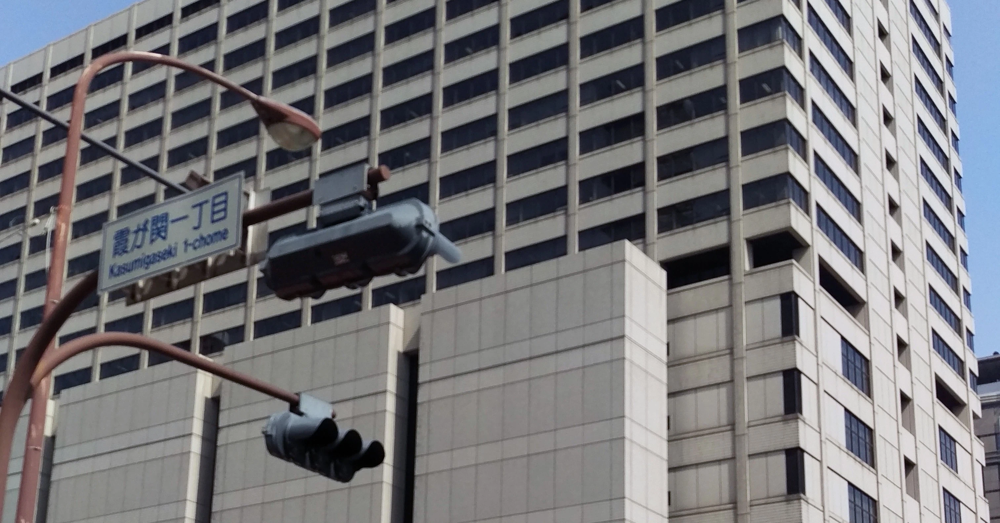
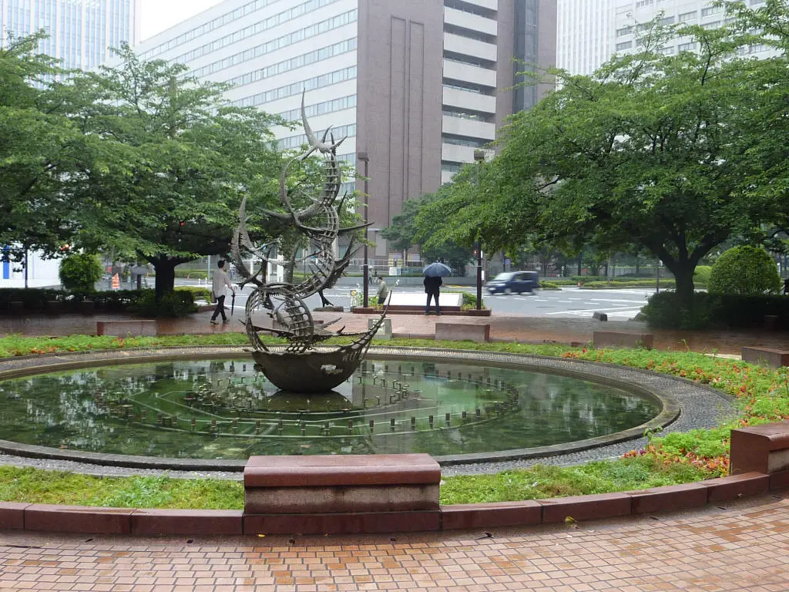
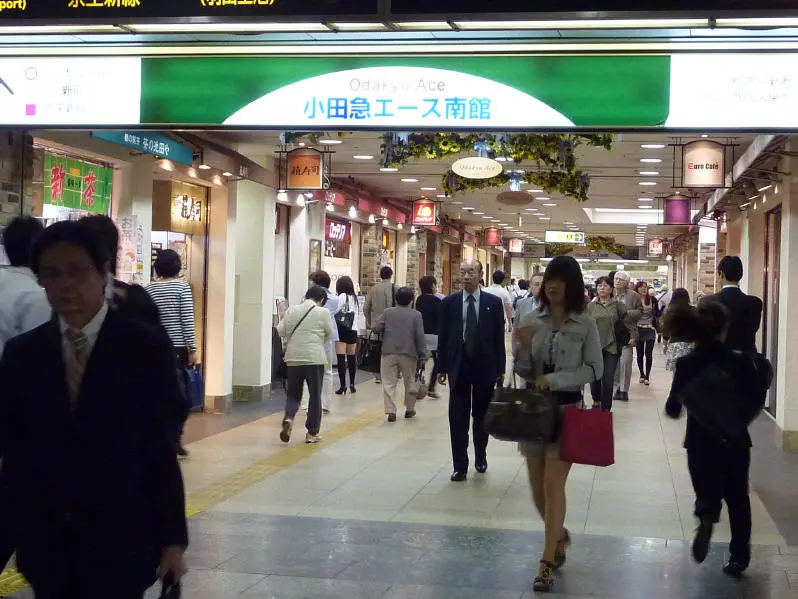
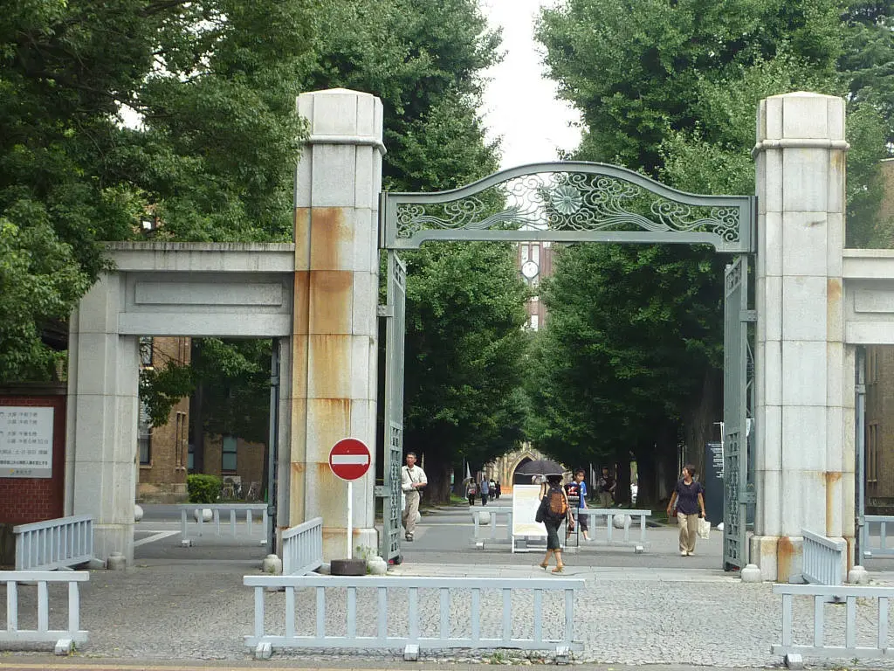
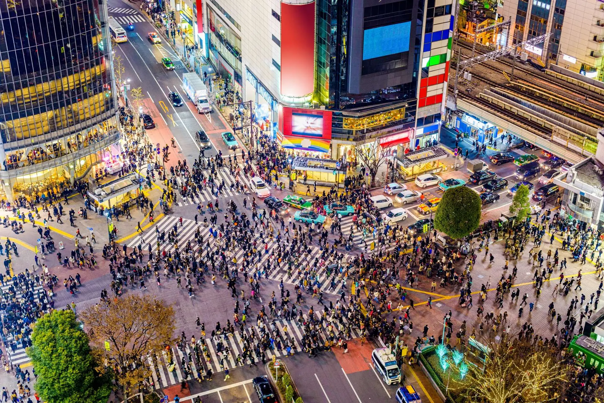
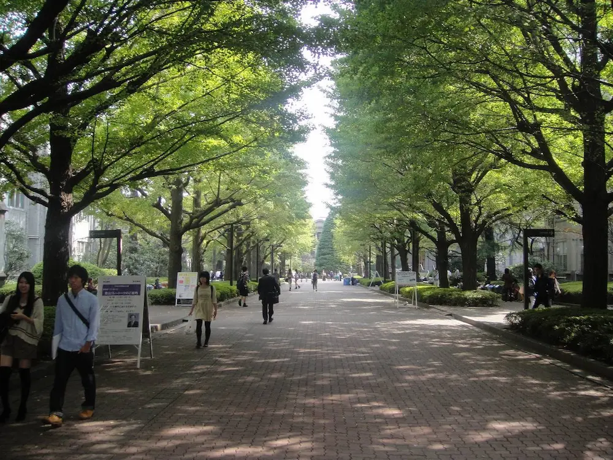
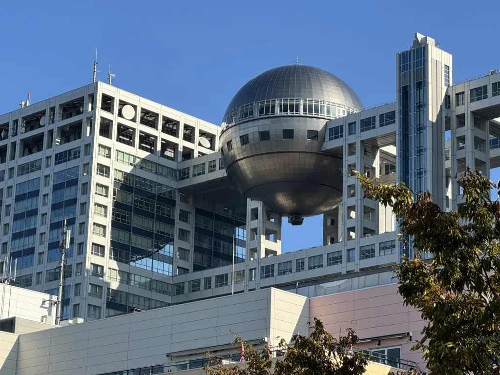
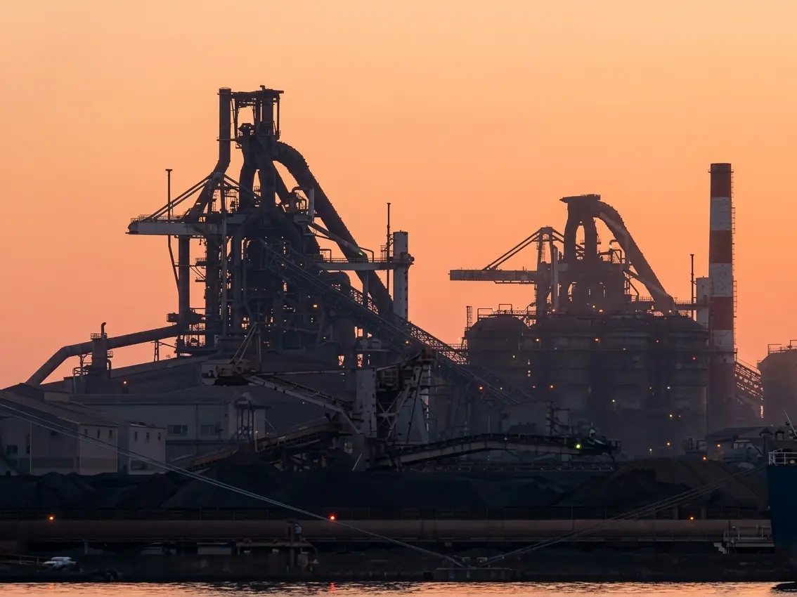

Death Note is not set in a fictional city. Tsugumi Ohba and Takeshi Obata did not invent a stylized Tokyo — they drew the real one, building by building, station platform by station platform, with a documentary precision that gives the series its particular quality of dread. Kira's world is convincing not because the supernatural elements are believable but because every ordinary element surrounding them is verifiably, photographably accurate. The fountain at Hibiya Park where Light writes Naomi Misora's name into the Death Note: it is there. The scramble crossing where the Kira broadcasts play on the giant screens of Shibuya 109: it is there. The police headquarters where Light's father works, the university gates where Light and L first meet, the jazz club where Misa Amane's world intersects with the moneyed elite of Minato: all of them are real addresses in a real city that you can walk out of this guide and into this afternoon.
This is the complete Death Note pilgrimage — not a vague mapping of "Tokyo" as backdrop, but a precise guide to nine specific locations that appear in documented episodes, drawn from real addresses and confirmed visual matches. Each location is documented with the scene it anchors, what you will find when you arrive, and how to navigate to it from anywhere in the city. Because Death Note's geography is Tokyo's geography, this pilgrimage is also a usable map of one of the world's most complex cities — structured around the scenes of one of its most precisely observed anime.
The pilgrimage is compact by the standards of this guide series. Demon Slayer required Kyushu and Tohoku; Spirited Away required Hokkaido and Matsuyama. Death Note requires only Tokyo — and a single afternoon in Yokohama for the finale. Everything else is walkable, connected by the Yamanote Line, and concentrated in the districts that define the series: Kasumigaseki's government buildings, Shibuya's mass-media density, Minato's wealth, Bunkyo's universities. You are not traveling across Japan. You are walking the city that Kira used as his jurisdiction.

The complete Death Note pilgrimage diagnostic — effort level, transit access, and scene reference for all 9 locations
The Pilgrimage Map — 9 Sacred Sites
- National Police Agency, Kasumigaseki — The Kira Investigation HQ
- Hibiya Park & Fountain — Light Writes Naomi's Name
- Shinjuku Station West Exit — The Penber Tail
- University of Tokyo, Hongo Campus — Light Meets L
- Shibuya Scramble Crossing — The Kira Broadcasts
- Icho Namiki & Blue Note Tokyo — Misa's World
- Fuji TV Building, Odaiba — Sakura TV
- Imperial Hotel Tokyo — L's First Gathering
- Daikoku Pier, Yokohama — The Final Confrontation
EN HOTEL Shibuya — Your Hub for the Entire Pilgrimage
1-1 Maruyamacho, Shibuya-ku, Tokyo · 7 min walk from Shibuya Station · Manga Sleepover
National Police Agency: The Kira Investigation Headquarters

Kasumigaseki is the district where Japan governs itself. The blocks between Kasumigaseki Station and Sakurada-mon Gate house the National Police Agency, the Ministry of Justice, the Supreme Court, and the Cabinet Office in a dense cluster of post-war concrete and glass that communicates institutional weight with every facade. This is the topography of the Death Note's procedural drama — the world that Light Yagami's father, Soichiro, inhabits, and the physical center from which the Kira investigation is conducted through most of the series.
The National Police Agency headquarters at 2-1-2 Kasumigaseki, Chiyoda-ku, appears in episodes 6 and 7 with a precision that extends to individual windows and the angle of approach from the street. This is the building where Light's father works, where Naomi Misora presents herself to speak with the FBI's Ray Penber, and where the task force's internal deliberations about Kira's identity produce the series' early procedural tension. The exterior is reproduced in the anime with the fidelity of architectural documentation — the series' background art team worked from direct observation, and it shows in the proportions and the specific arrangement of ground-floor columns visible in the approach from the station.
Kasumigaseki Station puts you in the center of this geography within minutes of anywhere in Tokyo. The walk from the station's C3 exit to the NPA building takes approximately four minutes along Sakurada-dori. In daylight the district is populated by government workers in dark suits; after 8 PM it empties with remarkable speed, and the institutional facades take on the specific quality of places built to be imposing rather than inhabited.
Where to Stay — Kasumigaseki / Central Tokyo
Hub: EN HOTEL Shibuya — 20 minutes by subway (Ginza Line: Shibuya → Kasumigaseki, direct). The pilgrimage base for the full Death Note itinerary.
Local: Hotel Tavinos Hamamatsucho — Manga-themed hotel in Minato-ku, 15 minutes by subway from Kasumigaseki. Manga-lined corridors and rooms designed as sequential comic panels. A single base covering the government district cluster and Odaiba.
Local: Imperial Hotel Tokyo — Named explicitly in Death Note episode 11 as L's meeting point with the task force. Staying here is itself a pilgrimage stop. 8 minutes on foot from the NPA building.
Hibiya Park: Where Light Writes the Name

Hibiya Park is Japan's first Western-style public park, opened in 1903 on the former parade grounds of the Imperial Army. It occupies 16 hectares of greenery in the center of one of the most land-expensive districts on earth, bordered by the Imperial Palace grounds to the north and the Kasumigaseki government complex to the west. The park is democratic in the way that only genuinely old public spaces manage to be — salarymen eating lunch on benches twenty meters from couples walking dogs, office workers cutting through on their way between ministries.
The central fountain — the large circular basin with its surrounding stone benches and tree-lined paths converging from four directions — is the precise location of one of Death Note's most morally significant scenes. In episode 8, Light Yagami walks Naomi Misora through the park in the minutes after she has given him her real name, talking to her with perfect composure while he waits for the name to take effect. Standing at the fountain after the scene is a specific experience: the park's physical openness — people visible in every direction, no possibility of concealment — makes Light's act feel exactly as audacious as the series intends.
The fountain area is freely accessible at all hours. In spring, the park's 900 cherry trees produce one of central Tokyo's most visited hanami spots. In autumn, the ginkgo trees turn gold in October. The Death Note scene is set in a cooler season — the anime's visual palette runs toward grey and overcast — which makes late October or November the most resonant time to visit.
Where to Stay — Hibiya / Marunouchi
Hub: EN HOTEL Shibuya — 22 minutes by subway (Ginza Line direct to Hibiya).
Local: Hotel Tavinos Hamamatsucho — 18 minutes by subway from Hibiya. Manga-themed rooms; covers the government district cluster and Odaiba in a single base.
Local: Imperial Hotel Tokyo — 8 minutes on foot from Hibiya Park. The Death Note connection is direct: L chose this hotel for his first task force meeting, and it overlooks the same government district that defines the series' procedural geography.
Shinjuku Station West Exit: The Penber Tail

Shinjuku Station processes more passengers per day than any other railway station on earth — approximately 3.5 million, spread across 53 platforms and 200 exits. The West Exit underground concourse — a low-ceilinged maze of tiled corridors connecting the Keio, Odakyu, and Tokyo Metro entrances — is the specific Death Note location: the subterranean passage where Light Yagami is tailed by FBI agent Ray Penber in episode 5, and where the manipulation that ends with Penber's death on the Yamanote Line platform above begins.
The anime captures the West Exit concourse with unusual fidelity — the tiled columns, the ceiling height, the specific configuration of escalators rising toward the Odakyu exit. In the scene, Light spots his tail and stages a performance across the underground space that plays on exactly the quality that makes Shinjuku Station navigable only to its regulars: the warren of passages, the exits that connect to unexpected places, the possibility of appearing and disappearing in ways that are disorienting to anyone who doesn't know the station's internal logic. Light knows the station. Penber does not.
The Lotteria fast-food outlet near the West Exit appears in the same episode by name — the anime uses it explicitly, one of the series' clearest acknowledgments of its Tokyo geography. The area around the West Exit underground concourse — the 1-chome section of the Nishi-Shinjuku shopping street directly beneath the Odakyu department store — remains structurally identical to its appearance in the series.
Where to Stay — Shinjuku
Hub: EN HOTEL Shibuya — 10 minutes by train (Keio Inokashira or JR Yamanote).
Local: Hotel Gracery Shinjuku — Directly above Kabukicho, 5 minutes from the West Exit. Character Themed hotel with Godzilla on the 8th floor — Shinjuku's most distinctive otaku accommodation, steps from the surveillance corridor.
Local: Book and Bed Tokyo Shinjuku — Inside Kabukicho: the bookstore you sleep in. Manga Sleepover; beds built into bookshelves. For the Death Note reader who wants to spend the night surrounded by the medium that produced the series.
University of Tokyo, Hongo Campus: Light Meets L

The University of Tokyo's Hongo campus is one of the most architecturally distinct universities in Japan. Its principal buildings — the Akamon (Red Gate), built in 1827; the gothic red-brick Yasuda Auditorium, completed in 1925; the library with its clock tower — form a campus that manages to feel simultaneously ancient and institutional in a way that places it in no particular decade. This temporal ambiguity made it the natural choice for Death Note's equivalent — To-Oh University — which had to feel both prestigious and generic enough to be plausible as Japan's premier university without being too obviously itself.
In episode 9, Light Yagami and the disguised L both achieve perfect scores on the To-Oh University entrance examination, meet at the results ceremony, and end up paired as roommates. The tennis match between them — one of the series' most celebrated sequences, a physical contest that functions as a psychological duel — takes place on the campus courts. The Yasuda Auditorium forecourt, where the entrance results are announced, is reproduced from the real building with its distinctive red-brick Romanesque facade and the plaza in front of it that fills with students during orientation events each April.
The campus is open to public self-guided visits. The Akamon — the Red Gate — admits visitors from Hongo-dori during daylight hours. The main campus axis running from the gate toward Yasuda Auditorium passes the Sanshiro Pond, whose surface reflects the surrounding trees in a way that appears in the anime's ambient shots of the university environment.
Where to Stay — Bunkyo / Jimbocho
Hub: EN HOTEL Shibuya — 25 minutes by subway (Ginza Line to Nihombashi, transfer to Marunouchi Line to Hongo-Sanchome).
Local: Manga Art Hotel Tokyo — Kanda/Jimbocho, 15 minutes by subway from Hongo. 5,000 curated manga volumes; capsule rooms built into bookshelves. For the Death Note pilgrim who wants to spend the night in the medium, a short ride from L's university.
Local: Book Hotel Jimbocho · MANGA ART ROOM — Jimbocho, Tokyo's used-book district, 12 minutes by subway. Two private manga cave rooms — Black Cave and White Cave — with private sauna. The most Death Note-appropriate stay in the city: two people in an enclosed room with a singular obsession.
Shibuya Scramble Crossing: The Kira Broadcasts

The Shibuya Scramble Crossing is the most photographed intersection in Japan. When the lights change, pedestrians cross simultaneously from all eight directions, producing a choreographed density of foot traffic that processes between 1,000 and 2,500 people per cycle during peak hours. It sits at the confluence of four major commercial streets directly in front of Shibuya Station's Hachiko Exit, surrounded by screens: the Shibuya 109 building's LED displays, the Q-Front building's giant monitor, the QWS building's facade. On any given evening, those screens carry advertisements, news feeds, and entertainment content visible to everyone crossing below.
In Death Note's opening minutes — the title sequence and the first minutes of episode 1 — the crossing appears as the visual emblem of the mass-media environment that Kira's broadcasts will eventually dominate. Later, when Kira's television appearances begin commanding public attention, the screens that appear in those sequences are specifically the displays surrounding the Shibuya 109 building. The genius of choosing this location is its transparency about how mass media actually functions: the screens are not propaganda tools — they are commercial displays that anyone with sufficient reach can buy — and Kira's eventual command of them is a logical extension of how the media economy already works.
The scramble is best experienced during the evening rush hour — 6 to 9 PM — when the crossing volume and screen brightness combine to produce the specific visual register of the anime's establishing shots.
Where to Stay — Shibuya
Hub & Local: EN HOTEL Shibuya — 5-minute walk from the Scramble. The hub is the local option for this site. Manga floor and themed rooms make it the most otaku-appropriate base in the immediate vicinity.
Local: The Millennials Shibuya — 4 minutes from the Scramble. Smart pods with projector screens and remote-controlled transforming beds — the Capsule/Cyberpunk option for Shibuya, aesthetically aligned with the series' atmosphere of surveillance and control.
Icho Namiki & Blue Note Tokyo: Misa's World

Aoyama is where Tokyo's wealth concentrates at street level: boutiques that require appointments, restaurants with twelve-week waits, gallery-like fashion stores whose interiors cost more to build than most buildings anywhere else. The neighbourhood's defining public space is the Icho Namiki — a 300-meter avenue of ginkgo trees running between Aoyama-itchome and Gaien-mae stations. In autumn, when the trees turn simultaneously gold over approximately two weeks in late November, the avenue becomes one of the most photographed streets in Tokyo.
In episode 15, scenes in Aoyama and the Icho Namiki area establish the social world of the moneyed class that Misa Amane inhabits as a model and television personality. The Blue Note Tokyo jazz club in Minami-Aoyama — at 6-3-16 Minami-Aoyama, Minato-ku — appears as a direct reference in the same episode. The anime's "Blue Note" is drawn from the real one, which has operated in this location since 1988 and serves as Tokyo's premier jazz venue for the category of person whose entertainment involves reservations and a dress code. Walking from Gaien-mae Station through the Icho Namiki and continuing south to the Blue Note is a 15-minute route that covers the essential Aoyama Death Note geography in a single walk.
Blue Note Tokyo's programming runs through international jazz acts; reservation is required and jacket-level dress is expected. This is the site for the pilgrim who wants to experience the social register that Misa inhabits from the inside rather than through a screen.
Where to Stay — Minato / Aoyama
Hub: EN HOTEL Shibuya — 15 minutes on foot from the Icho Namiki, or 8 minutes by Ginza Line to Omotesando.
Local: The Millennials Shibuya — 20 minutes on foot or 8 minutes by subway from Omotesando. For pilgrims spending a full day in the Minato district.
Fuji TV Building: The Sakura TV Broadcast Station

The Fuji TV building on Odaiba is one of the most architecturally specific structures in Tokyo — a media headquarters designed by Kenzo Tange and completed in 1997, consisting of two rectangular towers connected by a suspended walkway with a giant titanium sphere hanging from the bridge structure. From the Rainbow Bridge approach or the ferry from Hinode Pier, it reads as unmistakably itself: no other building in Japan has that sphere. It became famous immediately as a landmark and within a decade had established itself as Tokyo's unofficial symbol for television broadcasting.
Death Note uses this recognizability deliberately. The fictional Sakura TV — the station that begins broadcasting Kira's messages — is modeled directly on the Fuji TV building, the silver sphere intact and immediately identifiable. The anime's background artists reproduced the exterior from Odaiba's waterfront exactly. The building serves the same narrative function in fiction that it serves in reality: it is the physical embodiment of television as an institution with its own architecture, its own site in the city, its own relationship to the water and the bridge and the artificial island it sits on.
The exterior view from the Odaiba waterfront promenade provides the exact angle that appears in the anime's establishing shots and is always freely accessible. The ferry from Hinode Pier arrives directly at the Odaiba waterfront — approaching the island by water with the Fuji TV sphere visible ahead is the most cinematic arrival available on this pilgrimage.
Where to Stay — Odaiba
Hub: EN HOTEL Shibuya — 35 minutes via Shibuya → Shimbashi (JR Yamanote) → Yurikamome to Daiba.
Local: Hotel Tavinos Hamamatsucho — Hamamatsucho is the Yurikamome and Tokyo Monorail gateway to Odaiba. 15 minutes direct to Daiba Station. Manga-themed rooms; covers the government district cluster and Odaiba in a single base.
Local: Grand Nikko Tokyo Daiba — A five-star hotel on Odaiba's waterfront, minutes from the Fuji TV building. The hotel has a documented history of anime collaborations — including with Gundam. Themed rooms run on a rotating schedule: check the official website and social media before booking to confirm what collaboration is currently active. When an active collaboration is running, this is the most immersive otaku stay on the island.
Imperial Hotel Tokyo: L's First Gathering

The Imperial Hotel Tokyo has occupied its site at 1-1-1 Uchisaiwaicho since 1890. Its location — 200 meters from Hibiya Park, 500 meters from the National Diet Building, walking distance from the Imperial Palace East Garden — places it at the geographic center of Japanese institutional power, which is precisely why Death Note uses it.
In episode 11, the Imperial Hotel is named explicitly as the location where L convenes the Kira task force for the first time — the meeting where Soichiro Yagami and the investigators see L's face and hear his direct assessment of the case. The hotel's lobby and meeting suite arrangement, reproduced in the anime, communicate the specific logic of the choice: L does not meet the task force in a police building because L does not operate within institutional structures. He meets them in a hotel — a space that is both public and controlled. The Imperial Hotel is the building that mediates between the government buildings visible from its windows and the world outside them.
The hotel's public areas — the lobby, the arcade of shops and restaurants, the Peacock café on the ground floor — are accessible to non-guests. The Peacock's afternoon tea service is one of Tokyo's most established, and the lobby provides an hour of sitting in the space that L used for his first appearance before the investigation team without requiring a ¥60,000 room rate.
Where to Stay — Hibiya / Uchisaiwaicho
Hub: EN HOTEL Shibuya — 22 minutes by subway (Ginza Line: Shibuya → Hibiya, direct).
Local: Imperial Hotel Tokyo — Staying inside the building L chose for his first task force meeting is itself the Death Note experience. The lobby, the corridors, the arrangement of lifts — all reproduced in episode 11. The most direct Anime Pilgrimage accommodation in this guide. Verify rates directly; this is Tokyo's most historically significant luxury hotel and one of the pilgrimage locations itself.
Local: Hotel Tavinos Hamamatsucho — 18 minutes by subway. Manga-themed rooms at a fraction of the Imperial Hotel's rate — the practical option for pilgrims prioritising the government district cluster on a regular travel budget.
Daikoku Pier: The Final Confrontation

The Daikoku Pier sits on a man-made industrial island in Yokohama Bay — a working freight terminal, not a tourist destination. Its southern edge is occupied by large warehouse structures, container handling equipment, and the specific desolation of port infrastructure built for cargo rather than people: sodium vapor lights, chain-link fencing, concrete aprons wide enough for heavy vehicles. At night, with the Yokohama Bay Bridge illuminated behind it and the Tokyo skyline visible across the water, it produces a visual register that is simultaneously spectacular and completely indifferent to being seen.
Death Note's finale — the confrontation sequence in which Kira's identity is fully exposed — takes place in an industrial waterfront setting drawn directly from Daikoku Pier's southern edge. The "Yellow Box Warehouse" of the anime does not exist by that name, but its design — the low corrugated-metal structures, the concrete aprons, the specific relationship between the warehouse walls and the surrounding water on three sides — is modeled on the industrial facilities at the pier's southern end. The choice of location carries narrative logic: the most densely populated city on earth produces, at its industrial edges, spaces that are utterly empty of the civilian population that Kira claimed to be protecting. The finale happens where no one lives.
The pier reaches its most atmospheric state at night, when the industrial lighting turns the concrete blue-orange and the bay is visible as a black surface between the warehouse structures. The perimeter road along the southern edge offers views of the warehouse district without requiring access to the working terminal. From Yokohama Station, the most practical approach is taxi — approximately ¥2,500 to the pier's public access point.
Where to Stay — Yokohama
Hub: EN HOTEL Shibuya — 45–55 minutes total (JR Tokaido Line: Shibuya → Yokohama, 25 min; then taxi to Daikoku Pier). Practical for a dedicated evening visit to the finale location before returning to Tokyo.
Local: Manyo Club Minato Mirai — A Manga Sleepover destination in Yokohama's Minato Mirai waterfront district, 20 minutes by taxi from Daikoku Pier. Extensive manga library, onsen, and sauna overlooking the same Tokyo Bay that frames the finale sequence. The choice for the otaku business traveler or pilgrim basing in Yokohama.
Local: Capsule Net Gran Customer Isezaki Machiten — Capsule/Cyberpunk option in the Isezakicho district, near Kannai Station, 25 minutes by taxi from Daikoku Pier. Compact, efficient, and no-frills-but-well-equipped capsule experience. The practical choice for the solo traveler who wants to stay in Yokohama without waterfront hotel rates.
Why Death Note's Tokyo Is Still There
Most anime pilgrimage guides are about recovering something. You travel to the real Ginzan Onsen because the anime captured something true about it and you want to experience the source. Death Note works differently. The locations in this guide have not changed because they were not chosen for being atmospheric or beautiful or temporally specific — they were chosen for being permanent. The National Police Agency will not move. Hibiya Park will not be redeveloped. The Shibuya Scramble will not stop. The University of Tokyo's Hongo campus has been in continuous operation since 1877. These are the institutional permanences of a city that built its stability on the assumption that certain things would remain exactly where they are.
Ohba and Obata understood this when they set Death Note in real Tokyo rather than a fictional analog. The series is about the conflict between individual will and institutional structure — Kira's claim that his judgment should override the law's, L's claim that the law's process must override individual judgment, neither position fully comfortable, neither fully wrong. Setting that conflict in the actual buildings of the Japanese state, in the actual streets where institutional power concentrates, gave the argument a physical weight that a fictional city could not have provided. When you stand in front of the National Police Agency and look at the building where the task force met, you are looking at the argument's real setting. The building makes the argument material.
Light Yagami wrote a name at the Hibiya Park fountain and walked away while a woman died. The fountain is still there. The benches around it are still there. Stand at the basin on an autumn evening, when the ginkgo trees along the path have turned and the government buildings of Kasumigaseki are visible above the tree line a few hundred meters away, and you are standing in a place where the series' central question — whether the power to eliminate evil justifies the elimination of due process — was dramatized with more geographic specificity than almost any other anime has attempted. Walk through it at dusk. The question is still open. The fountain is still running.